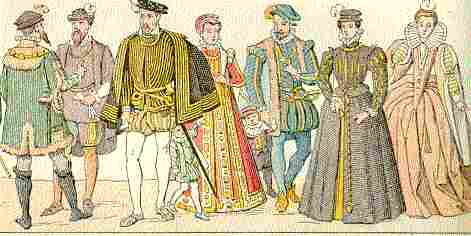

1.Ar benn-hêrez a Geroulaz
He-devoa eun diduel vraz
En eur c'hoari diouzh an dizez
Gant bugale an aotrounez.
2.Evid ar bloaz n'he-deus ket graet
Rag he danvez n'aotre ket;
Emzivadez eo a-berzh tad:
Grad-vad he c'herent a vez mad.
3.Va oll gerent a-du va zad
N'o-deus biskoazh karet va mad,
Nemed c'hoantet va maro,
Da gavoud war-lerc'h va madoù!"
4.Ar bennherez a Geroulas
He deus hiriv plijadur vras
O tougen ur sae satin gwenn
Ha bokedoù aour war he fenn
5.Ned eo ket botoù lasenet
Boas ar bennherez da gaouet
Boteier seiz ha loeroù glas
Boas ur bennherez Keroulas"
6.Evel-se a gomzed er sal
Pa zeue 'r bennherez er bal
Rak markiz Melz oa erruet
Gant he vamm hag heul bras-meurbet
7."Me garje bezañ koulmig c'hlas
War an doenn a Geroulas
Evit klevet ar gomplidi
Etre he vamm ha va hini
8.Me a gren gant pezh a welan
N'eo ket hep soñj int deut amañ
Eus a Gernev, pa zo en ti
Ur bennherez da zimeziñ
9.Gant he vad hag he anv brudet
Ar markiz-se din na blij ket
Hogen Kerdomas pellik zo
A garan, a garin atav"
10.Nec'het oa ivez Kerdomas
Gant an dud deut da Geroulas
Karout eure ar bennherez
Hag a lavare alies :
11."Me garje bezañ eostig-noz
Er jardin war ur bodig roz
Pa zeufe da zastum bleunioù
Ni 'n em welfe eno hon-daou
12.Ma garje bezañ krakhouad
War al lenn a walc'h he dilhad
Evit glebiañ va daoulagad
Gant an dour a c'hleb he daoudroad"
III
13.Na Salaun a zegouezas
Da sadorn-noz e Keroulas
War e varc'hig du d'ar maner
'Vel ma oa boazet da ober
14.War an nor borzh pa 'n eus skoet
Ar bennherez 'n eus digoret
Ar bennherez, o tont er-meaz
O reiñ un tamm boued d'ur paour keazh
Peleac'h eo ho tudjentiled ?
- Aet int da gas ar chas d'an dour
Salaun, kae prim d'o sikour
16.- Ned eo ket evit dourañ chas
Ez on deuet da Geroulas
Nemet evit ober al lez
Ra viot furoc'h, pennherez"
IV
17.Ar bennherez a lavare
D'he mamm itron, en dervezh-se :
"Abaoe 'mañ ar markiz amañ
Va c'halon zo deut da rannañ
18.Va mamm itron, ha me ho ped,
D'ar markiz Melz n'em roit ket
Va roit kent da Berrarrun
Pe, mar kirit, da Salaun
19.Va roit kent da Gerdomas,
Hennezh en deus ar muiañ gras
E ti-mañ e teu alies
Hag e lezit din ober lez
20.- Kerdomas, din-me leveret,
Da Gastelgall ha c'hwi zo bet ?
- Da Gastelgall ez on-me bet
Mad, m'hen toue, n'em eus gwelet
21.Mad, m'hen toue, n'em eus gwelet
Nemet ur gozh sal mogedet
Ha prenestroù hanter torret
Ha dorojoù bras keflusket
22.Nemet ur gozh sal mogedet
Ennañ ur c'hwregig kozh louet
O trailhañ foenn d'he c'haboned
Mar defe kerc'h na refe ket
23.- Gaou a livirit, Kerdomas,
Ar markiz zo pinvidik-bras
E zorojoù zo arc'hant gwenn
E brenestroù zo aour melen
24.Hounnezh a vezo enoret
A vezo gantañ goulennet
- N'em bezo, mamm, enor ebet
Nag ivez n'e c'houlennan ket
25.- Va merc'h, ankounit an holl-se
Tra kent ho mad ne zalc'han-me
Roet ar gerioù, an dra zo graet
D'ar markiz viot dimezet"
26.Itron Keroulas a gomze
Ouzh ar bennherez evel-se
Dre m'he doa erez er galon
Ha oa Kerdomas he mignon
27."Ur walenn aour hag ur sined
Gant Kerdomas oant din roet
O c'hemeris en ur ganañ
Me o azroy en ur ouelañ
28.Dal, Kerdomas, da walenn aour,
Da sined, da garkanioù aour,
N'on ket lezet d'az kemeret
Miret da zraoù ne dlean ket"
29.Kriz vije 'r galon na ouelje
E Keroulas neb a vije
O welet ar bennherez keazh
O poket d'an nor pa'z ea meaz
30."Kenavo, ti bras Keroulas,
Biken ennoc'h na rin ur paz
Kenavo, ma amezeien,
Kenavo bremañ, da viken"
31.Peorien ar barrez a ouele
Ar bennherez o frealze :
"Tavit, peorien, na ouelet ket,
Da Gastelgall deut d'am gwelet
32.Me a roy aluzenn bemdez
Teir gwech sizhun, dre garantez,
Triwec'h palevarzh a winizh
A gerc'h ivez kerkoulz hag heiz"
33.Ar markiz Melz a lavare
D'e c'hwreg nevez pa he c'hleve :
"'Vit kement-all na refot ket
Rak va madoù na badfent ket
34.- Va aotrou, hep kaout ho re,
Me roio aluzenn bemdez
Evit dastumiñ pedennoù
Goude hor marv, d'hon eneoù"
VI
35.Ar bennherez a lavare
E Kastelgall, daou viz goude :
"Ne gavfen ket ur c'hannader
Da zougen d'am mamm ul lizher ?"
36.Ur pajig yaouank a gomzas
Ouzh an itron pa he c'hlevas :
"Skrivit lizherioù, pa gerfet,
Kannaderien a vo kavet"
37.Koulskoude ul lizher skrivas
Ha d'ar paj e-berr e roas
Gant gourc'hemenn evit e gas
Raktal d'he mamm da Geroulas
38.Pa erruas al lizher ganti
A oa er sal oc'h ebatiñ
Gant lod tudjentil eus ar vro
Ha Kerdomas a oa eno
39.P'he doa-hi al lizher lennet
Da Gerdomas 'deus lavaret :
"Likit dipra kezeg raktal
Ma'z aimp fenoz da Gastelgall"
40.Itron Keroulas c'houlenne
E Kastelgall pa errue :
"Netra nevez zo en ti-mañ
P'eo stegnet ar perzhier giz-mañ ?
41.- Ar bennherez oa deut amañ
A zo marv en nozvezh-mañ
- Ma eo marv ar benneherez
Me a zo he gwir lazherez !
42.Meur wech he doa din lavaret :
D'ar markiz Melz n'em roit ket
Va roit kent da Gerdomas
Hennezh en deus ar muiañ gras"
43.Kerdomas ha 'r vamm dizeürus
Skoet gant un taol ken truezus
Zo en em ouestlet da Zoue
Er c'hlaostr du, evit o buhez
Variantes tirées du premier carnet de collecte de La Villemarqué

|
P. 265
L'héritière de Keroulas (1) Ar benn-herezh a Geroulaz He-deus un diduemant bras C'hoari an diz war ar pave Gant bugale 'n aotroù nevez . (5) Ned eo ket koefoù lasenet Soñj d'ar benn-herez da gaoued, Boteier-ler ha loeroù glaz Soñj 'deus penn-herez Keroulas. (15) - Penn-herezig, din lavarit, Pelec'h ket eo ho tudjentiled? - Aet int da gas ar chas d'an dour. Salaün, kerzhit d'o sikour! (16) - Ned eo evit dour ar chas Emaon-me deuet da Geroulas, Nemed evit ober ho lez, Ma vefec'h furroc'h, penn-herez. |
(20)- Larit-hu din-me, Kerthomaz,
Ha c'hwi zo bet da Geroulaz ? - Da Geroulaz ez-on me bet, Netra a feson 'm-eus gwelet, (21) Netra a feson 'm-eus gwelet, Med ur goz grwegig vogedet (22.2) O trailhañ foen d'he c'haboned. Ma defe kerc'h ne refe ket. (23)- Ur gaou larez din, Kerthomaz, Rag e Keroulas zo traoù all. E Keroulaz a zo ur zal Zo alaouret beteg an douar. (a) - Bennoz Doue, aour zo en he zi! Arc'hant deus vit o alaouriñ. Gant ... Markiz Melz a zeuyo er vro, Me oar awalc'h me goulenno. (24) - Honnezh a vo din enoret Vo gant ar markiz goulennet. |
- Non paz, ma mamm, enor ebed,
Ha pa n'hen goulennan-me ket. (29) Kriz ar galon, na ouelje Barzh maner Melz neb a vije Gweld ar benn-herez desedet (41.2) An nozvezh ma oa he eured. P. 66 (noté au crayon) Keroulas (26.1) 'N itron Keroulas evelse Gant ar benn-herez a gaose, (b) Dre 'gare Kerthomaz ivez, Kerthomaz, gant gwir garantez. (26.3) Dre ma oa biskoul 'n he c'halon Ha Kerthomaz oa he vignon. |